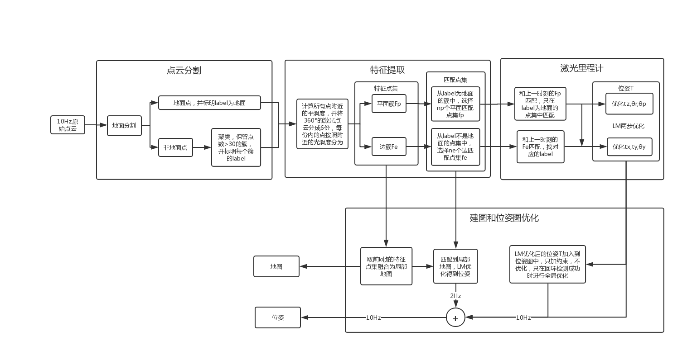
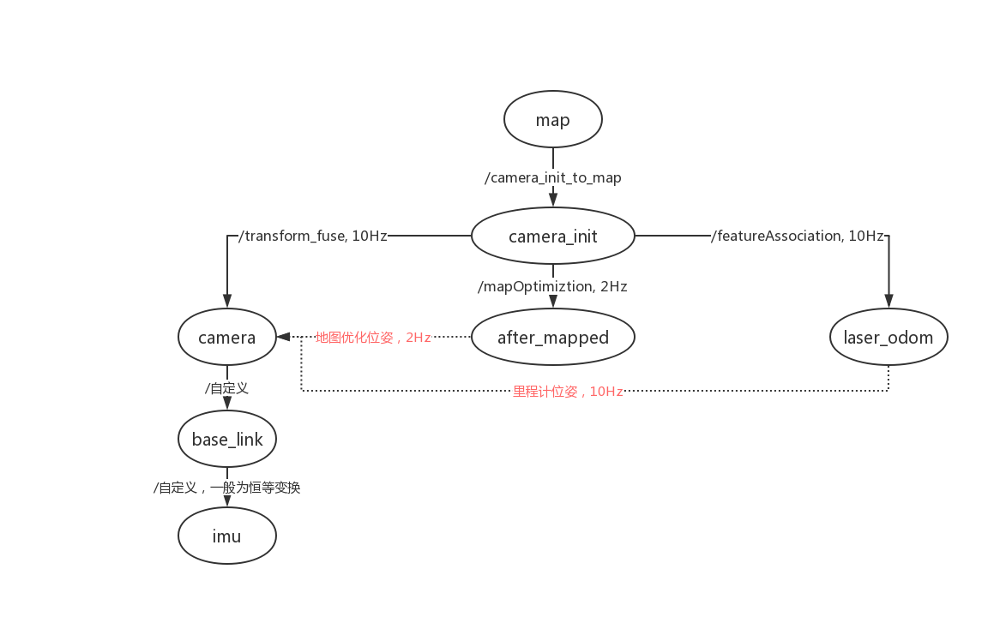

LeGO-LOAM在LOAM的基础上进行了改进，并添加了回环检测。和LOAM的区别如下：
| 方案 | LOAM | LeGO-LOAM |
|---|---|---|
| 特征提取 | 从原始点云中直接计算特征 | 先进行地面分割，再对分割点云计算特征 |
| 特征匹配 | 直接对原始点云进行匹配 | label相同的点才匹配，LM两步优化 |
| 局部地图 | 选100M以内的特征点集作为局部地图 | 选k帧内的特征点集作为局部地图 |
这些改进都是为了提高计算速度，以达到在嵌入式平台上实现实时建图的效果。
LeGO-LOAM的系统框架如图所示：

可以看出LeGO-LOAM由四个部分构成：
- 点云分割：将原始点云进行聚类，分为地面簇和非地面簇，非地面中又有很多簇，其中小于30个点的簇被移除。剩余的点云簇都有自己独特的标签。这样做排除了一些噪点和不稳定的小物体，提高了激光特征的稳定性。
- 特征提取：首先将激光一扫分成6部分，对每个部分中的点云簇进行光滑度计算，得到面和边两种特征集
光滑度高的为平面，反之的为边。分别对面和边进一步筛选出最光滑的面和最陡峭的边用做下一步的匹配特征集
- 激光里程计：将上一步得到的
和前一时刻的特征集
进行匹配。同样是边和边匹配，面和面匹配。LM算法分别优化两种匹配结果并得到位姿估计
优化面和面的匹配得到
，优化边与边的匹配得到
- 建图和位姿图优化：用上一步得到的位姿作为节点，加入到位姿图中。当存在回环检测时，进行全局位姿优化。同时用前k时刻的激光特征点集
构成局部地图，和当前时刻的匹配点集进行匹配，并LM优化，得到当前的位姿估计。
ROS Node节点图
节点图如下，可以看出程序和论文中叙述的流程基本一致。
ROS tf树
tf树如下，其中虚线并不属于tf树，只是为了说明坐标系之间的关系，方便理解。

参考资料
https://github.com/RobustFieldAutonomyLab/LeGO-LOAM/tree/master/LeGO-LOAM